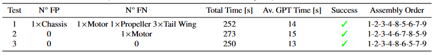

D-RMGPT has been evaluated with different operators experience levels: .
Assembly process followed by an inexperienced operator.
Assembly process followed by an experienced operator.
Example of failure of the system due to an incorrect detection.
Test results inexperienced operator. In the 12 tests conducted with inexperienced operators, 10 were able to successfully complete the assembly, while 2 resulted in assembly failure due to a detection failure, achieving a success rate of 83%. For each test, the final completion time of the assembly, the average time required by the framework to suggest the next component for the operator to install, and any false positives and negatives detected in the detection process are reported.

Test results experienced operator. Three tests were conducted with experienced operators, who altered the assembly sequence differently each time to demonstrate the system's flexibility and ability to recover from unplanned situations. In all three tests, the operator successfully completed the assembly.
Detector comaparison with other VLM-based object detector systems. A comparison in terms of Precision and Recall metrics has been conducted between the DetGPT-V module and two other state-of-the-art object detectors for VLM-based object detection systems.

As a final result, a comparison is provided between the time required by inexperienced operators who have never seen the product before and assemble it using the D-RMGPT framework, and other operators with the same knowledge level (no prior knowledge) who assemble the aircraft in a traditional manner, following the instruction manual provided by the manufacturer. 20 different operator testers have been involved: 10 for D-RMGPT assisted assembly and 10 for manual assembly.
The average time in case with D-RMGPT is equal to 310.8 s and it is 33.4% lower than the average time required with a manual assembly approach equal to 466.8 s. From the standard deviation is clear visible that the right case has less variations in time required.